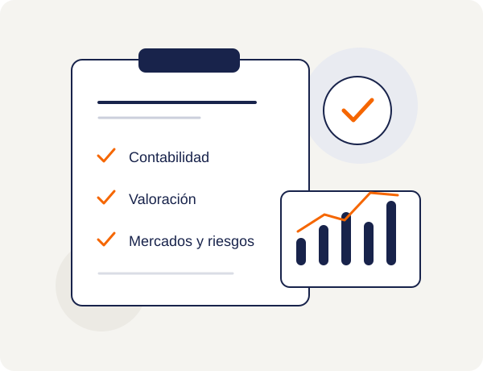

Career Path · Módulo 03 de 04
03 Practica para entrevistas técnicas
Organiza la preparación según el puesto, selecciona una guía y practica en el idioma del proceso. Termina con un simulacro y una revisión de los puntos que necesitas reforzar.
Define qué te van a evaluar
Lee la oferta e investiga el equipo y la actividad de la empresa. Confirma el idioma y el formato de las pruebas para priorizar tu preparación.
- Banca de inversión y asesoramiento financiero: contabilidad, valoración, financiación y operaciones corporativas.
- Private equity: análisis de inversiones, valoración y fundamentos de LBO.
- Markets y gestión de activos: productos, riesgos, actualidad de mercado y razonamiento de inversión.
- Otros equipos: utiliza la descripción del puesto para elegir los temas y materiales adecuados.


Prepara un plan de trabajo
- Elige la guía o los capítulos que correspondan a la función.
- Divide la preparación por temas y reserva sesiones para repasar los puntos que no domines.
- Practica en voz alta sin leer las respuestas. Explica el razonamiento y los supuestos con claridad.
- Prepara tu trayectoria, motivación por el equipo y conocimiento de la empresa.
- Haz un simulacro en el idioma del proceso, revisa los errores y repite los temas que necesites reforzar.
Si la entrevista es online, comprueba conexión, cámara, audio y zona horaria con antelación.
Guías de preparación por sector
Wall Street Prep · The Red Book
Para: banca de inversión, asesoramiento financiero y private equity. También incluye bloques de mercados de capitales y preguntas por industria.
Contenido: contabilidad, valoración, M&A, LBO y preparación de entrevistas. Selecciona los capítulos que correspondan a tu función.